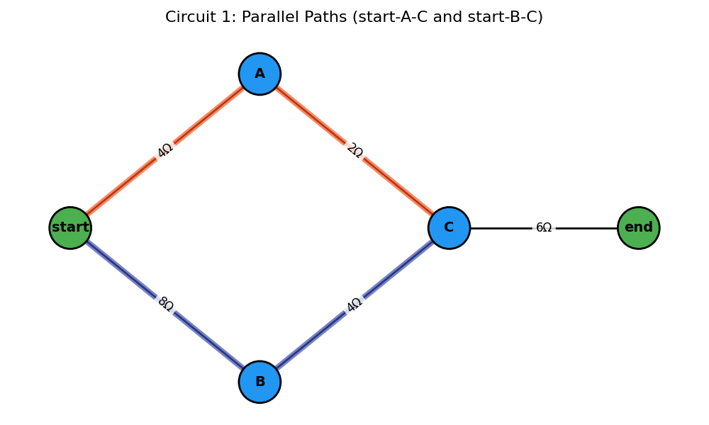
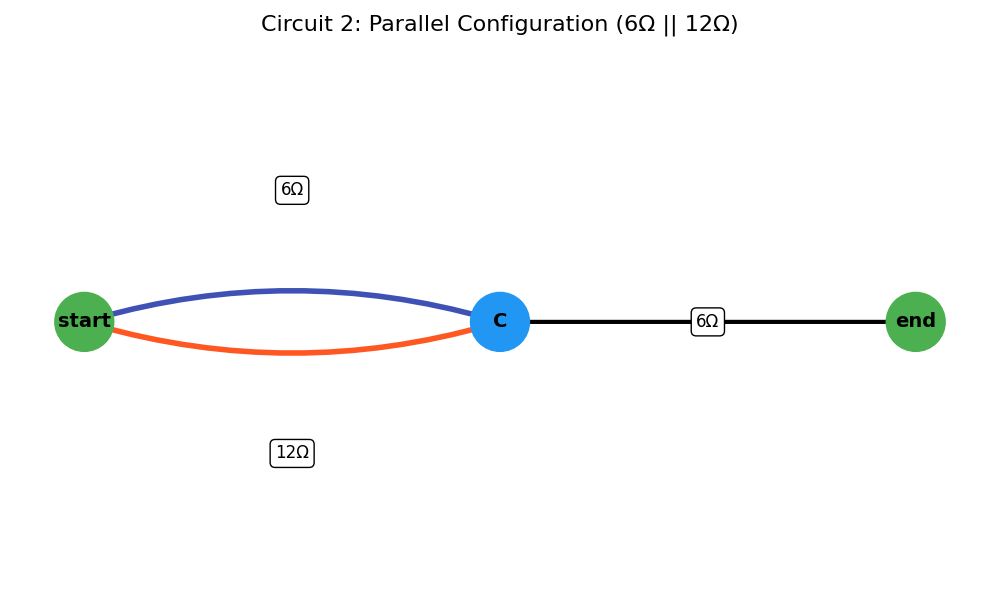
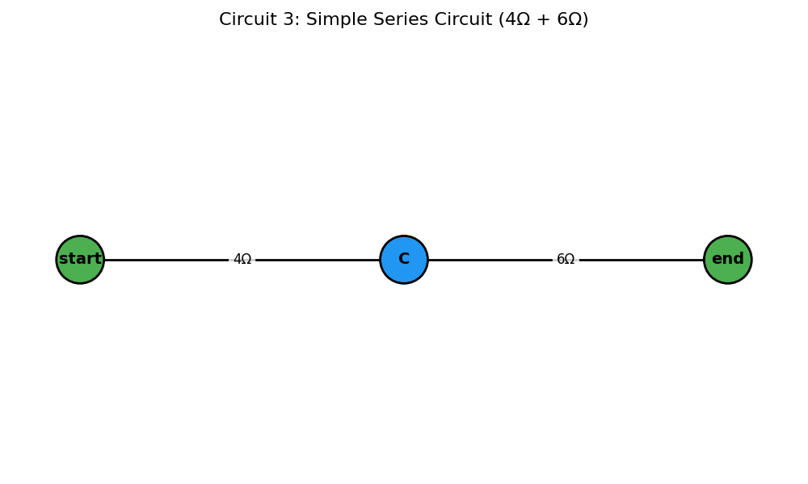

Problem 1
Equivalent Resistance Using Graph Theory
Introduction and Motivation
Calculating equivalent resistance is a fundamental task in circuit analysis. While traditional approaches use series and parallel simplification rules manually, graph theory provides a powerful alternative – transforming circuit analysis into an algorithmic graph simplification process.
Circuits can be represented as graphs: - Nodes = junctions - Edges = resistors (with resistance as weight)
By identifying series and parallel patterns in the graph, we can iteratively reduce it to compute total resistance between two terminals.
This approach is: - Scalable for large networks - Automatable for software - Insightful for understanding electrical connectivity and topology
Learning Goals
After completing this task, you should be able to:
- Represent a resistor network as a weighted graph.
- Apply reduction rules (series and parallel) using graph algorithms.
- Implement an algorithm that simplifies arbitrary configurations.
- Analyze different circuit structures programmatically.
Algorithm
The circuit is modeled as a multigraph G = (V, E), where V is the set of junctions (nodes) and E is the set of resistors (edges). Each edge e ∈ E has a weight r_e representing its resistance. Two distinct nodes, start_node and end_node, are specified as the terminals across which the equivalent resistance is sought.
The algorithm proceeds as follows:
- Initialization:
- Construct the graph from the given circuit components.
-
Validate that
start_nodeandend_nodeexist in the graph. Ifstart_node=end_node, the resistance is 0Ω. -
Iterative Reduction: Repeatedly apply the following reduction rules until no more simple series or parallel reductions are possible, or the graph is reduced to a single edge between
start_nodeandend_node. - Parallel Reduction: Identification: Find any pair of nodes (u, v) connected by two or more edges (resistors R₁, R₂, ..., R_k).
- Reduction: Replace these k parallel resistors with a single equivalent resistor R_p between u and v. The equivalent resistance is calculated as: ( R_p = (Σᵢ₌₁ᵏ 1/R_i)⁻¹ ) if any R_i = 0, R_p = 0. If all R_i = ∞, R_p = ∞.
- Action: Remove the original k edges and add a new edge (u, v) with resistance R_p. If R_p = ∞, effectively remove the connection unless it's the only path.
- After a reduction, restart the scan for further simplifications as the graph structure has changed.
Series Reduction:
- Identification: Find any node w such that:
- w is not the
start_nodeorend_node. - The degree of w, deg(w), is exactly 2. Let the two edges incident to w be (u, w) with resistance R₁, and (w, v) with resistance R₂.
- Ensure u ≠ v₁ (if u = v, it's a loop, not a simple series element in a path from
start_nodetoend_node). - Reduction: Replace the two series resistors R₁ and R₂, and the intermediate node w with a single equivalent resistor R_s between u and v. The equivalent resistance is: ( R_s = R₁ + R₂ ) if R₁ = ∞ or R₂ = ∞, then R_s = ∞.
- Action: Remove node w (which also removes edges (u, w) and (w, v)). Add a new edge (u, v) with resistance R_s. If R_s = ∞, effectively this path segment becomes an open circuit.
- After a reduction, restart the scan.
- Reduction: Replace these k parallel resistors with a single equivalent resistor R_p between u and v. The equivalent resistance is calculated as: ( R_p = (Σᵢ₌₁ᵏ 1/R_i)⁻¹ ) if any R_i = 0, R_p = 0. If all R_i = ∞, R_p = ∞.
- Action: Remove the original k edges and add a new edge (u, v) with resistance R_p. If R_p = ∞, effectively remove the connection unless it's the only path.
- After a reduction, restart the scan for further simplifications as the graph structure has changed.
- Action: Remove node w (which also removes edges (u, w) and (w, v)). Add a new edge (u, v) with resistance R_s. If R_s = ∞, effectively this path segment becomes an open circuit.
- After a reduction, restart the scan.
Termination and Result:
- The loop terminates if no series or parallel reductions were made in a full pass.
- Ideal Case: If the graph is reduced to a single edge between
start_nodeandend_node, its resistance is the equivalent resistance. - Final Parallel Case: If the graph consists of only
start_nodeandend_nodeand multiple edges directly connecting them, these are in parallel. Calculate their combined parallel resistance. - Non-Reducible Case: If the graph cannot be simplified further by these rules to one of the above states, the circuit may contain non-series-parallel configurations (e.g., a Wheatstone bridge not in balance). The algorithm, in this form, will report that it cannot fully reduce the circuit.
- Open Circuit: If, at any point or at the end, there is no path between
start_nodeandend_node, the equivalent resistance is ∞. - Short Circuit: If an equivalent resistance of 0Ω is found.
Series Connection
Two resistors R₁ and R₂ in series: R_eq = R₁ + R₂
Parallel Connection
Two resistors R₁ and R₂ in parallel: 1/R_eq = 1/R₁ + 1/R₂ => R_eq = (1/R₁ + 1/R₂)⁻¹
Phyton İmplemntaion
import matplotlib.pyplot as plt
import networkx as nx
def draw_circuit(G, pos, title, highlight_paths=None):
plt.figure(figsize=(10, 6))
node_colors = ['#4CAF50' if node in ['start', 'end'] else '#2196F3' for node in G.nodes()]
nx.draw_networkx_nodes(G, pos, node_color=node_colors, node_size=1800, edgecolors='black', linewidths=2)
nx.draw_networkx_labels(G, pos, font_size=14, font_weight='bold')
# Draw all edges in black first (thin)
nx.draw_networkx_edges(G, pos, width=2, edge_color='black')
# Draw highlighted edges thicker and colored
if highlight_paths:
for i, path_edges in enumerate(highlight_paths):
color = ['#FF5722', '#3F51B5', '#009688'][i % 3] # Orange, Blue, Teal
edgelist = []
for e in path_edges:
if isinstance(e, (list, tuple)) and len(e) == 2:
edgelist.append(e)
nx.draw_networkx_edges(G, pos, edgelist=edgelist, edge_color=color, width=6, alpha=0.7)
# Edge labels showing resistance with white background for readability
edge_labels = {(u, v): f"{d['resistance']}Ω" for u, v, d in G.edges(data=True)}
nx.draw_networkx_edge_labels(G, pos, edge_labels=edge_labels, font_size=12,
bbox=dict(facecolor='white', edgecolor='none', alpha=0.8,
boxstyle='round,pad=0.3'))
plt.title(title, fontsize=16, pad=20)
plt.axis('off')
plt.tight_layout()
plt.show()
def get_all_edges(graph, u, v):
if graph.is_multigraph():
return [graph[u][v][key] for key in graph[u][v]]
else:
return [graph.get_edge_data(u, v)]
def combine_parallel_resistances(edges_data):
total_reciprocal = 0
for edge in edges_data:
total_reciprocal += 1 / edge['resistance']
return 1 / total_reciprocal
def add_or_update_edge(graph, u, v, resistance):
if graph.has_edge(u, v):
existing_edges = get_all_edges(graph, u, v)
resistances = [edge['resistance'] for edge in existing_edges] + [resistance]
combined = combine_parallel_resistances([{'resistance': r} for r in resistances])
for _ in existing_edges:
graph.remove_edge(u, v)
graph.add_edge(u, v, resistance=round(combined, 5))
else:
graph.add_edge(u, v, resistance=round(resistance, 5))
def get_node_pairs_with_parallel_edges(graph):
pairs = []
if graph.is_multigraph():
checked = set()
for u, v, key in graph.edges(keys=True):
if (u, v) not in checked and (v, u) not in checked:
count = graph.number_of_edges(u, v)
if count > 1:
pairs.append((u, v))
checked.add((u, v))
return pairs
def get_final_resistance(G, source_node, sink_node):
if G.is_multigraph():
edges_data = [G[source_node][sink_node][key] for key in G[source_node][sink_node]]
total_reciprocal = sum(1 / edge['resistance'] for edge in edges_data)
return 1 / total_reciprocal
else:
return G[source_node][sink_node]['resistance']
def equivalent_resistance_with_visualization(graph, source_node, sink_node):
G = graph.copy()
simplification_steps = []
while True:
edges_combined_this_step = []
# Series Reduction: nodes with degree 2 excluding source and sink
series_nodes = [node for node in G.nodes if node not in (source_node, sink_node) and G.degree(node) == 2]
for node in series_nodes:
neighbors = list(G.neighbors(node))
if len(neighbors) != 2:
continue
edges_to_neighbors = []
for nbr in neighbors:
edges_data = get_all_edges(G, node, nbr)
if len(edges_data) > 1:
r_parallel = combine_parallel_resistances(edges_data)
else:
r_parallel = edges_data[0]['resistance']
edges_to_neighbors.append((nbr, r_parallel))
combined_resistance = edges_to_neighbors[0][1] + edges_to_neighbors[1][1]
combined_edges = []
for nbr in neighbors:
edges_data = get_all_edges(G, node, nbr)
for _ in edges_data:
combined_edges.append((min(node, nbr), max(node, nbr)))
G.remove_node(node)
u, v = neighbors[0], neighbors[1]
add_or_update_edge(G, u, v, combined_resistance)
edges_combined_this_step.append(combined_edges)
# Parallel Reduction: edges with multiple parallel edges
for (u, v) in get_node_pairs_with_parallel_edges(G):
parallel_edges = get_all_edges(G, u, v)
if len(parallel_edges) > 1:
combined_resistance = combine_parallel_resistances(parallel_edges)
combined_edges = []
for _ in parallel_edges:
combined_edges.append((min(u, v), max(u, v)))
for _ in parallel_edges:
G.remove_edge(u, v)
G.add_edge(u, v, resistance=round(combined_resistance, 5))
edges_combined_this_step.append(combined_edges)
if len(G.edges) == 1 and G.has_edge(source_node, sink_node):
simplification_steps.append(edges_combined_this_step)
break
if not edges_combined_this_step:
raise Exception("Circuit cannot be further simplified using series-parallel reductions")
simplification_steps.append(edges_combined_this_step)
final_resistance = get_final_resistance(G, source_node, sink_node)
return final_resistance, simplification_steps
# ======= Example Circuit 1 =======
G1 = nx.Graph()
G1.add_edge('start', 'A', resistance=4)
G1.add_edge('A', 'C', resistance=2)
G1.add_edge('start', 'B', resistance=8)
G1.add_edge('B', 'C', resistance=4)
G1.add_edge('C', 'end', resistance=6)
pos1 = {
'start': (0, 0),
'A': (1, 1),
'B': (1, -1),
'C': (2, 0),
'end': (3, 0)
}
# ======= Example Circuit 2 =======
G2 = nx.MultiGraph()
G2.add_edge('start', 'C', resistance=6)
G2.add_edge('start', 'C', resistance=12)
G2.add_edge('C', 'end', resistance=6)
pos2 = {
'start': (0, 0),
'C': (3, 0),
'end': (6, 0)
}
def run_and_visualize(G, pos, source, sink, title):
print(f"\n{title}")
draw_circuit(G, pos, f"{title} - Original Circuit")
final_res, steps = equivalent_resistance_with_visualization(G, source, sink)
print(f"Final Equivalent Resistance between '{source}' and '{sink}': {final_res} Ω")
for i, step_edges in enumerate(steps):
step_title = f"{title} - Simplification Step {i + 1}"
highlight = [edge for group in step_edges for edge in group]
draw_circuit(G, pos, step_title, highlight_paths=[highlight])
# Run and visualize both circuits
run_and_visualize(G1, pos1, 'start', 'end', "Circuit 1: Parallel-Series Combination")
run_and_visualize(G2, pos2, 'start', 'end', "Circuit 2: Parallel Configuration")


